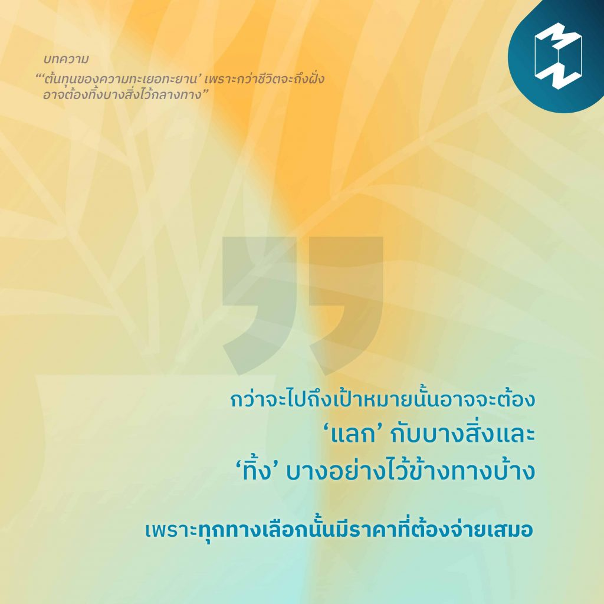

2)ต้นทุนของความทะเยอทะยาน
“กว่าจะไปถึงเป้าหมายนั้นอาจจะต้อง ‘แลก’ กับบางสิ่งและ ‘ทิ้ง’ บางอย่างไว้ข้างทางบ้าง เพราะทุกทางเลือกนั้นมีราคาที่ต้องจ่ายเสมอ” “น้อยคนที่จะเข้าใจสิ่งที่เรากำลังพยายามทำอยู่ จนกว่าเราจะทำสำเร็จ ทำให้บ่อยครั้งที่เรามักจะต้องเจอกับคำพูด คำดูถูก ความสงสัย ความไม่เข้าใจ และการกระทำต่างๆ ที่สร้างพลังลบให้กับเราไม่น้อย” เข้าใจต้นทุนของความทะเยอทะยานและรับมือกับราคาที่ต้องจ่ายในการเดินทางสู่ความสำเร็จ ติดตามอ่านได้ในบทความ “‘ต้นทุนของความทะเยอทะยาน’ เพราะกว่าชีวิตจะถึงฝั่ง อาจต้องทิ้งบางสิ่งไว้กลางทาง”